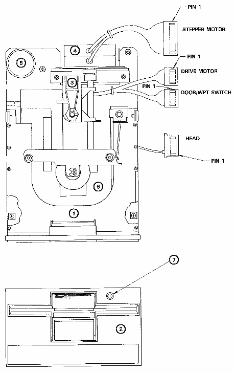

PARTS LIST
805003101 Micropolis Drive 8050
825001601 Micropolis Drive 8250
- 31416501 MIC DOOR/HUB ASSEMBLY
- Door Assy. w/Latch & Spring
- Disk Clamp Assy.
- Write Protect & Micro Switch Assy.
- Disk Eject Latch & Spring
- 31416601 MIC FRONT BEZEL
31416701 MIC 8050 R/W HEAD Assy.
- R/W Head w/Harness
- Load Arm w/Pad
- 31416801 MIC 8250 R/W HEAD Assy.
- Up/Low R/W Head w/Harness
- 31416901 MIC STEPPER MOTOR Assy.
- Stepper Motor w/Harness
- Stepper Mounting Bracket
- 31417001 MIC/MSA TACH MOTOR
- 31417101 MIC HOUSING/SPINDLE Assy.
- Housing Base w/Standoffs
- Spindle/Tach Assy.
- Plastic Mountings
31417201 MIC DRIVE BELT
31417301 MIC HARDWARE
- Assorted Screws
- Assorted Springs
- 1 Each: Platen, Pivot
31417401 Univ. Load Pad
- 90382001 Univ. LED Holder (2 pc.)
32086901 Drive 0 Label
32086902 Drive 1 Label
|
|

|
| STEPPER MOTOR |
8 | BLACK | POSITIONER MOTOR 04 |
|---|
| 7 | WHITE | POSITIONER MOTOR 02 |
| 6 | GREEN | POSITIONER MOTOR CASE GROUND |
| 5 | YELLOW | POSITIONER MOTOR CENTER TAP 2 |
| 4 | YELLOW | POSITIONER MOTOR CENTER TAP 1 |
| 3 | N/C | |
| 2 | BLACK | POSITIONER MOTOR 03 |
| 1 | WHITE | POSITIONER MOTOR 01 |
| DRIVE MOTOR |
4 | RED | +12V TO MOTOR |
|---|
| 3 | YELLOW | TACHOMETER OUTPUT |
| 2 | GREEN | TACHOMETER RETURN |
| 1 | BLUE | SPINDLE DRIVE MOTOR |
| DOOR/WPT SWITCH |
4 | GREEN | DOOR SWITCH COMMON |
|---|
| 3 | YELLOW | DOOR SWITCH NORMAL OPEN CONTACT |
| 2 | BROWN/WHITE | WRITE PROTECT SWITCH COMMON CONTACT |
| 1 | WHITE/RED | WRITE PROTECT SWITCH NORMAL CLOSED |
| HEAD SWITCH |
5 | BLACK | READ/WRITE GROUND |
|---|
| 4 | YELLOW | ERASE GROUND |
| 3 | RED | ERASE POSITIVE (W/RESPECT TO YEL) |
| 2 | BLACK/CRIMP TERM | PLUG |
| 1 | WHITE | READ/WRITE POSITIVE (W/RESPECT TO BLACK) |
| CONNECTOR | PIN NO. | WIRE COLOR | WIRE DESTINATION |
|---|
|
{kind=link}